| To build a composite command, check "Composite" first. The command is empty now. | 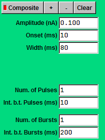 | 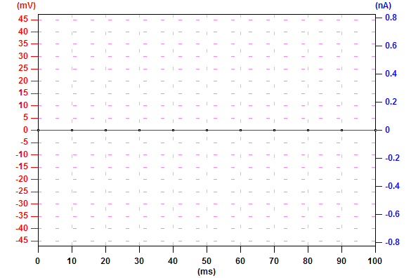 |
| To add a pulse waveform to the composite command, set the parameters and click "+" to add it to the composite command. | 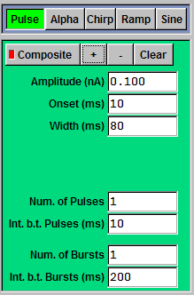 | 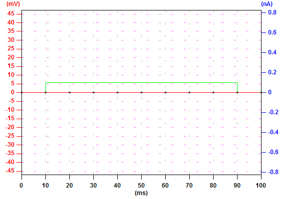 |
| To add another pulse waveform, set the parameters and click "+" to add it. | 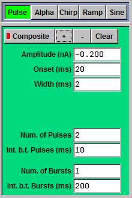 | 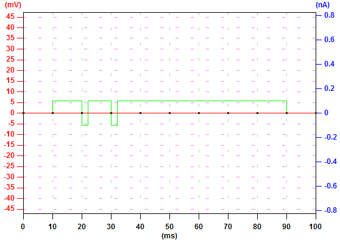 |
| To add an alpha waveform, set the parameters and click "+" to add it to the composite command. | 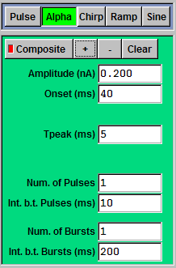 | 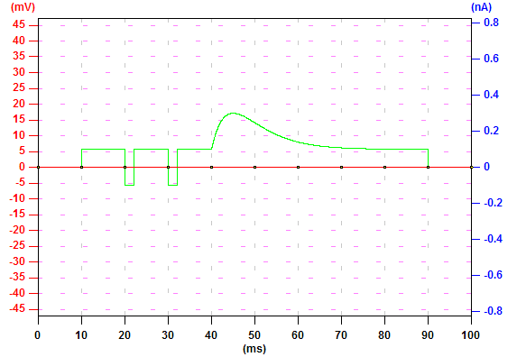 |
| To add a ramp waveform, set the parameters and click "+" to add it to the composite command. | 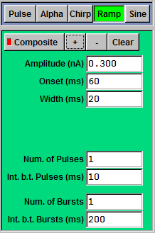 | 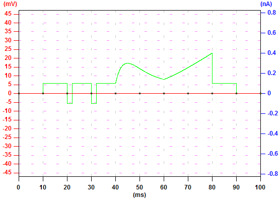 |
| To move the last added command, click "-". | 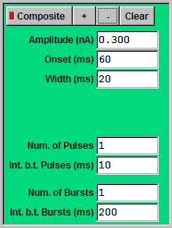 | |
| To save all settings to a setting file (.set), click "Save As" and follow the instructions. | 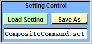 | |
| To clear the composite command, click "Clear" and all the added command elements will be removed. | 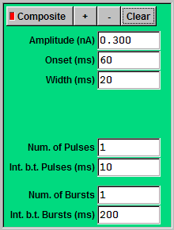 | |
| To load the saved composite command, click "Load Setting" and follow the instructions. | 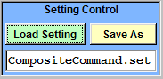 | |
| To go back to the basic mode, uncheck "Composite". |